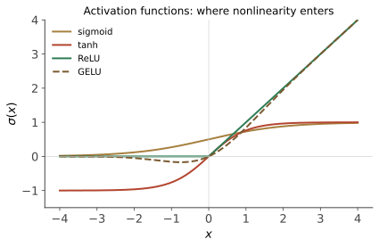
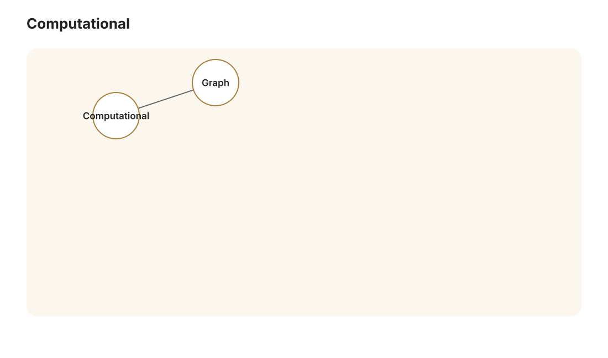
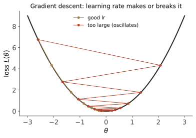

本讲目录
第 04 讲 · 神经网络的兴衰与反向传播
诞生场景：前三讲的模型都在"人给的特征"上找函数。可要是连特征都说不清呢？大脑没人给它设计特征，靠约 860 亿个神经元互联自己搞定了一切。1943 年起，一批研究者开始琢磨：能不能仿照神经元，搭出会学习的机器？这条路线在此后六十年里两起两落——被寄予厚望、被判死刑、复活、再被 SVM 按在地上、再翻盘统治世界。本讲讲透它的原理与恩怨，核心是完整推导那个让多层网络成为可能的算法：反向传播。
学习层：把“反向传播”变成可追踪的消息
具体谜题：一条边变大，损失会怎样？
下面的实验固定一个 2 → 2 → 1 网络和一个样本。先猜：把 \(w_{11}\)（\(x_1\to h_1\)）稍微调大，预测 \(\hat y\) 会让平方损失上升还是下降？不要先算完整梯度，只根据这条路径上每个局部导数的符号作答。
先做预测，再看答案
初始样例是 \(x=(0.8,-0.4)\)、目标 \(y=0.6\)；默认激活函数为 sigmoid。预测以下三件事：① 哪个隐藏节点的 \(z\) 为负？② \(\partial L/\partial w_{11}\) 的符号是什么？③ 中心差分和解析梯度应不应该接近？然后在实验中切换到 ReLU，观察第二个隐藏节点被“截断”后消息如何改变。
最小模型：只保留四个部件
前向计算是 \(z_1=W_1x+b_1\)、\(a_1=\sigma(z_1)\)、\(z_y=v^\top a_1+b_y\)、\(\hat y=\sigma(z_y)\)；损失取 \(L=\tfrac12(\hat y-y)^2\)。实验只让你观察一个样本和一个选中参数，因此它是“显微镜”，不是完整的 XOR 训练器。
形式化步骤：局部导数如何接力
- 输出端先传回 \(\partial L/\partial \hat y=\hat y-y\)，再乘输出激活的局部导数，得到 \(\delta_y=\partial L/\partial z_y\)。
- 沿输出边回传：\(\partial L/\partial a_{1,i}=\delta_yv_i\)；经过隐藏激活后，\(\delta_i=\delta_yv_i\sigma'(z_i)\)。
- 到达输入边时，消息与“上游激活”相乘：\(\partial L/\partial w_{ij}=\delta_i x_j\)，偏置梯度则是 \(\partial L/\partial b_i=\delta_i\)。
- 中心差分把同一个参数改成 \(w+\varepsilon\) 与 \(w-\varepsilon\)，用 \([L(w+\varepsilon)-L(w-\varepsilon)]/(2\varepsilon)\) 做独立校验；真正训练仍使用解析梯度的负方向。
边界与反例：什么时候直觉会失效？
- ReLU 在 \(z=0\) 处不可微；若差分步长跨过这个拐点，数值梯度和选定的次梯度不一致是预期的边界现象。
- 梯度为零不等于参数“没有作用”：可能是上游误差为零，也可能是 ReLU 把局部导数置零；要同时看节点的 \(z,a\) 与回传消息。
- 数值差分不是训练方法：参数越多，所需前向次数越多；它适合在小模型上抓转置、符号或索引错误。
迁移题：把消息传给另一层
如果输出层改成两个 logit 并接 softmax + 交叉熵，哪一步要改写，哪一步（“误差 × 上层激活”）仍然不变？再想象一个 batch：哪些量可以沿样本维并行，哪些参数梯度需要累加？把答案写成四行伪代码。
无 JavaScript 时的静态版本：固定样例给出 \(z_1=0.86\)、\(z_2=-0.95\)。sigmoid 下先逐层算出 \(a_1,a_2,\hat y\)，再用 \(\partial L/\partial w_{11}=(\hat y-y)\sigma'(z_y)v_1\sigma'(z_1)x_1\)；中心差分应在合适的 \(\varepsilon\) 下接近同一个数。页面脚本加载后可选择 sigmoid/ReLU、任意一条边或偏置、查看 SVG 计算图，并只对选中参数执行一步梯度下降。
1. 从神经元到感知机（1943–1969）
1943 年 McCulloch 和 Pitts 提出神经元的数学漫画：输入加权求和，超过阈值就"放电"：
\(\sigma\) 是激活函数——最初是阶跃函数，后来换成光滑版本，如 sigmoid \(\sigma(z) = \frac{1}{1 + e^{-z}}\)。单个神经元就是第 02 讲的线性分类器套一个非线性外壳；Rosenblatt 1958 年的感知机给它配上了学习算法（第 02 讲已证其收敛性），媒体狂热了十年。
1969 年，Minsky 和 Papert 的著作《Perceptrons》给出了那个著名的判决：单层感知机连 XOR 都表示不了（第 01 讲已证：\(\mathbb{R}^2\) 线性分类器 VC 维为 3，打散不了 XOR 那 4 个点；一行代数也能证：若 \(f(0,0)<0, f(1,1)<0, f(0,1)>0, f(1,0)>0\)，四式相加得 \(0 < 0\)，矛盾）。书里同时指出多层网络或许能行，但"没有有效的训练算法"。经费应声枯竭，第一次 AI 寒冬降临，神经网络研究冻结了近十五年。
2. 多层网络的表达力：万能逼近

把神经元层层堆叠：第 \(l\) 层把上一层输出 \(a^{(l-1)}\) 变换为
这就是多层感知机（MLP）。XOR 在表示上可以被解决：两个隐藏神经元分别实现"或"和"与"，输出层算"或减与"。但“存在一个能表示 XOR 的参数点”和“训练算法能找到它”是两件事；下方 lab 固定一个小网络来观察梯度，而不是完整的 XOR 训练器。更一般地：
定理（万能逼近，Cybenko 1989 / Hornik 1991）：设 \(\sigma\) 是任意非常数、有界、连续的"挤压型"函数。则形如 \(g(x) = \sum_{i=1}^{N} c_i\, \sigma(w_i^\top x + b_i)\) 的单隐层网络全体，在紧集上对连续函数一致稠密——即对任意连续 \(f\) 与 \(\epsilon > 0\)，存在足够宽的单隐层网络 \(g\) 使 \(\sup_x |f(x) - g(x)| < \epsilon\)。
证明思路（Cybenko 的泛函分析论证）：反证。设逼近不到的连续函数存在，则网络全体张成的子空间在 \(C(K)\) 中不稠密；由 Hahn–Banach 定理，存在非零有界线性泛函在该子空间上恒零；由 Riesz 表示定理，该泛函对应一个非零符号测度 \(\mu\)，满足 \(\int \sigma(w^\top x + b)\, d\mu(x) = 0\) 对一切 \(w, b\) 成立。最后证明挤压函数族"足够丰富"（取 \(w\) 方向的极限可逼出半空间指示函数，进而由傅里叶论证）迫使 \(\mu = 0\)，矛盾。\(\blacksquare\)
两点必须泼的冷水，也是这条定理最常被误读的地方：
- 它只说"存在"，不保证找得到（训练是另一回事），也不保证 \(N\) 小——最坏情形下所需宽度对维数指数增长；
- 深度的价值它没有回答。后来的深度分离定理（如 Telgarsky 2016）表明：某些函数用深网络表示只需多项式规模，用浅网络则需指数规模。直觉：深度提供复合，\(f(g(h(x)))\) 式的层级结构用"层级的机器"表示才高效——而真实世界（图像 = 边→纹理→部件→物体）恰恰是层级的。这是"深度"学习的第一性原理。
3. 训练：梯度下降与反向传播


表达力有了，Minsky 的第二个问题还在：怎么训练？参数 \(\theta = \{W^{(l)}, b^{(l)}\}\) 几千上万个，损失 \(L(\theta)\) 非凸（不像 SVM），解析解无望。答案是最朴素的迭代：往下坡走。
3.1 梯度下降与 SGD
\(\eta\) 是学习率。全量梯度要过一遍所有样本，太贵；随机梯度下降（SGD）每步只用一个小批量（mini-batch）估计梯度——无偏但带噪声。噪声不全是坏事：它帮助逃离鞍点和尖锐极小值。非凸优化没有全局最优保证，但深度学习的经验事实是：足够大的网络里，SGD 找到的局部极小值几乎都"够好"——这个现象至今没有完整的理论解释（与第 01 讲"VC 界失效"并列为深度学习理论的未解之谜）。
现在只剩一个问题，也是 1969–1986 年间卡住一切的问题：\(\nabla_\theta L\) 怎么算？参数在层层复合函数的深处，一个 \(W^{(1)}\) 的分量要经过后面所有层才影响损失。
3.2 反向传播：完整推导
设网络共 \(L\) 层，单个样本损失 \(\ell(a^{(L)}, y)\)（推导对任意可微损失/激活成立）。目标：所有 \(\dfrac{\partial \ell}{\partial W^{(l)}}, \dfrac{\partial \ell}{\partial b^{(l)}}\)。
核心记号：定义第 \(l\) 层的误差信号
即损失对该层"激活前值"的敏感度。整个算法就是四个方程。
方程一（输出层的 \(\delta\)）：直接链式法则，逐分量
（激活逐元素作用，故 \(j \neq i\) 的项为零。）向量形式：\(\delta^{(L)} = \nabla_{a^{(L)}} \ell \odot \sigma'(z^{(L)})\)，\(\odot\) 为逐元素乘。
常用组合有惊喜：平方损失 \(\ell = \frac12\|a - y\|^2\) 给出 \(\nabla_a \ell = a - y\)；而 softmax + 交叉熵的组合，\(\delta^{(L)}\) 恰好也化简为 \(a^{(L)} - y\)（one-hot 的 \(y\)；推导留作练习，展开 \(\ell = -\log \frac{e^{z_y}}{\sum_k e^{z_k}}\) 对 \(z_i\) 求导即可）——"预测减真相"，形式干净得不像巧合。
方程二（\(\delta\) 的逐层回传）——算法的心脏。已知 \(\delta^{(l+1)}\)，求 \(\delta^{(l)}\)。链条是 \(z^{(l)} \to a^{(l)} \to z^{(l+1)} \to \ell\)，其中 \(z^{(l+1)} = W^{(l+1)} a^{(l)} + b^{(l+1)}\)：
向量形式：
读出它的含义：误差沿着权重矩阵的转置逆流而上（前向乘 \(W\)，反向乘 \(W^\top\)），途中被本层激活函数的导数逐元素调制。
方程三、四（参数梯度）：\(z^{(l)} = W^{(l)}a^{(l-1)} + b^{(l)}\) 中 \(W^{(l)}_{ij}\) 只出现在 \(z^{(l)}_i\) 里，且 \(\partial z^{(l)}_i / \partial W^{(l)}_{ij} = a^{(l-1)}_j\)：
每层梯度 = 本层误差 × 上层激活的外积。完整算法：
- 前向：从 \(x\) 逐层算出所有 \(z^{(l)}, a^{(l)}\)（缓存下来）；
- 反向：方程一起手，方程二逐层回传 \(\delta^{(L)} \to \delta^{(L-1)} \to \cdots\)；
- 沿途用方程三、四收集所有梯度；
- SGD 更新。
复杂度：反向传播的乘加次数与前向同阶（每层一次矩阵-向量乘），算全部梯度只需前向的常数倍，而不是按参数个数重复前向。对比一下就知道这有多惊人：数值差分要对每个参数扰动一次、做 \(O(\text{参数数})\) 次前向；一个百万参数的网络，反向传播与数值差分之间可有百万量级的成本差异。没有这个效率，深度学习不存在。本质上它是多元链式法则 + 动态规划（\(\delta^{(l)}\) 是被复用的子问题答案），也是今天所有深度学习框架里"自动微分"（反向模式）的数学内核——PyTorch 的 loss.backward() 做的就是上面四个方程在计算图上的一般化。
1986 年 Rumelhart、Hinton、Williams 在 Nature 发表这套算法（思想此前多次被独立发现：Werbos 1974 的博士论文、更早的控制论文献，但 1986 年这篇让它出圈），Minsky 的判决被推翻，神经网络第一次复兴开始：1989 年 LeCun 用它训练卷积网络识别手写邮编（第 05 讲主角的前身），Hornik 证明万能逼近，一切看起来欣欣向荣。
4. 第二次寒冬（1995–2006）：为什么又不行了
复兴只维持了不到十年。90 年代中期起，神经网络在学术界再次失宠，这次的对手正是第 02 讲的 SVM。原因值得逐条看清，因为后来深度学习的爆发恰好是这些原因被逐条消除：
1. 梯度消失——深不下去的数学根源。盯住方程二连乘的结构，从输出层回传到第 \(l\) 层：
粗略地按范数估计，每回传一层，\(\|\delta\|\) 被乘上一个约为 \(\|W\| \cdot \max\sigma'\) 的因子。而 sigmoid 的导数 \(\sigma'(z) = \sigma(z)(1 - \sigma(z)) \leq \frac14\)（在 \(z=0\) 处取最大；两侧饱和区几乎为 0）。如果权重的谱范数没有抵消这个缩放，连续层的梯度就会快速衰减；在一个简化的单位尺度估计中，10 层可出现 \(4^{-10} \approx 10^{-6}\) 的量级——底层梯度几乎收不到信号。反过来若 \(\|W\|\) 大，连乘就可能爆炸。梯度消失/爆炸是深度的原罪，1991 年 Hochreiter 的硕士论文就把它说透了（此人后来发明 LSTM，第 06 讲再见）。
2. 数据太少、算力太弱。几千个样本训不动大网络（第 01 讲：复杂模型需要大 \(n\)）；CPU 训练以周计。
3. 理论气质完败。SVM：凸优化全局最优、VC 理论保泛化、调参少且行为可解释。神经网络：非凸、局部极小、初始化玄学、"炼丹"。审稿人的风向直接反映生态：当年论文里出现"neural network"就难中，SVM 成为默认基线。
5. Hinton 的坚守（2006–2012）
大多数人转向了。Geoffrey Hinton 没有——从 70 年代读博起他就认定"大脑显然是靠某种梯度式学习工作的，这条路不可能错"。加拿大 CIFAR 研究所在神经网络最不受待见的年代给了他和 Bengio、LeCun 一小笔长期经费（后来被戏称为"加拿大黑手党"的三人组，2018 年共享图灵奖）。
2006 年，Hinton 在 Science 发表深度信念网络（DBN）：逐层无监督预训练——先让每一层单独学习重构输入（受限玻尔兹曼机，RBM），学完一层再堆下一层，最后用反向传播整体微调。这绕开了梯度消失（每层的起点已在不错的位置），首次证明训练深层网络是可行的。同一篇论文里，他刻意启用了一个新名字：deep learning——部分原因是"neural network"这个词在审稿人那里名声太差，换个说法才发得出去。
有趣的注脚：随着 ReLU、良好初始化和 GPU 的到来，逐层预训练这个具体技术几年内就被淘汰了——DBN 的历史作用不是技术本身，而是把"深度可训练"这个信念重新注入了整个领域，并聚拢了一批人才等待引爆点。引爆点在 2012 年到来，需要的三样东西恰好同时凑齐：大数据（ImageNet）、大算力（GPU）、以及消除梯度消失的架构技巧。那就是下一讲的故事。
本讲小结
| 概念 | 一句话 |
|---|---|
| 感知机之死 | 单层线性，XOR 不可表示（1969），第一次寒冬 |
| MLP | 层层复合 \(\sigma(Wx+b)\)；深度 = 复合 = 层级表示 |
| 万能逼近 | 单隐层已稠密，但只保证存在性；深度的价值在表示效率 |
| SGD | 小批量噪声梯度下坡；非凸但经验上够好 |
| 反向传播 | \(\delta^{(l)} = (W^{(l+1)\top}\delta^{(l+1)}) \odot \sigma'\)；链式法则 + 动态规划；代价 ≈ 2 次前向 |
| 梯度消失 | sigmoid 导数 \(\leq 1/4\) 连乘指数衰减；深网络底层训不动 |
| 第二次寒冬 | 输给 SVM：凸性、理论、小数据时代的气质之争 |
| Hinton 坚守 | 2006 逐层预训练证明"深度可训"，deep learning 得名 |
动手：在本页的 backprop lab 中固定一个 2→2→1 网络，切换 sigmoid/ReLU，选一条边或一个偏置，读出前向节点值与链式法则消息；再用中心差分做梯度检查。默认状态下相对误差应很小，但靠近 ReLU 的 \(z=0\) 拐点时要把差异解释为不可微边界，而不是盲目追求一个阈值。
延伸阅读：Nielsen《Neural Networks and Deep Learning》第 2 章（反向传播讲得最细的免费教材，neuralnetworksanddeeplearning.com）；Rumelhart, Hinton & Williams (1986)。
下一讲：2012 年 9 月 30 日，ImageNet 竞赛结果公布，一个名叫 AlexNet 的模型把错误率从 26% 砍到 15%，全场哗然。深度学习的热潮由此点燃——而它用的网络结构 CNN，把"归纳偏置"这个概念演绎到了极致。